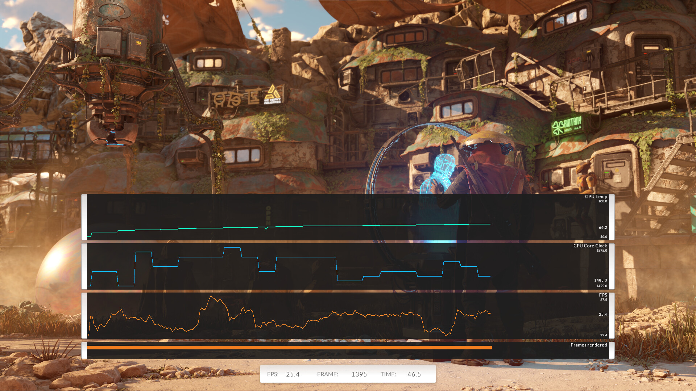

3DMark 跑分为什么能当基准？拆解它藏在低帧率背后的测量原理
3DMark 的分数凭什么被装机圈、评测圈当成通用语言？本文从低帧率设计、特性测试与综合测试的分工、PCIe 验链路、跨平台对齐四个维度，拆解这套基准测试背后的测量哲学。
如果你攒过机、刷过驱动、或者看过硬件评测，一定见过 3DMark 的分数。Time Spy、Port Royal、Wild Life……一串数字后面跟着一个等级标签，仿佛成了显卡性能的通用货币。但你有没有想过一个问题：同样是跑个分，为什么 3DMark 的分数大家都认，不像某些娱乐跑分工具那样被嗤之以鼻？装机完可以从下载拿一份亲自体验一下。
我第一次跑 3DMark 是刚装完第一台自己的主机，Time Spy 只跑出三十多帧的画面——心里咯噔一下：这配置不对吧？后来去3dmark文档翻了一下才弄明白，低帧率不是 bug，是整个测量体系的核心设计。这个发现让我重新理解了基准测试到底在做什么，而 3DMark 作为这个领域最老牌的选手，它的官网上有完整的用户指南和帮助中心，这套设计哲学值得挖一挖。
低帧率的设计美学：为什么跑分画面故意这么卡
多数人第一次看到 3DMark 实时画面时的反应都是「怎么这么低帧」。官方帮助中心对这个误解的回答异常直白：这些测试非常重负载，低帧率是正常现象。
这背后是一套反直觉的测量逻辑。基准测试的目的不是让你觉得好玩，是精确测量——而且精确到能区分同架构两代驱动、同芯片不同品牌卡之间的细微差异。要做到这个，负载必须被故意压到远超当代游戏的水平，让哪怕是旗舰卡也有足够的测量区间。想象一下，如果测试场景轻松到 RTX 4090 能跑 500 帧，那它跑出 480 还是 490 帧？这个差值在测量噪声里就没了。但如果把负载压到让 4090 只能跑 150 帧，那每一帧渲染时间里的微小波动就能被稳定地捕捉和量化。
帧率越接近硬件极限，每一帧的渲染时间波动越能反映真实性能差异——这就是为什么 3DMark 的官方用户指南特意强调「看分数，别看绝对帧率」。

更精妙的是，每个测试都使用固定渲染分辨率——Time Spy 固定 1440p，Wild Life Extreme 固定 4K UHD——和你的桌面分辨率完全无关。4K 显示器跑分不会吃亏，1080p 显示器也不会占便宜，渲染完成后缩放到桌面显示的过程对分数的影响可以忽略。这一层对齐机制让跨设备、跨显示器的分数直接可比，消除了无数变量。
特性测试的分工哲学：为什么要拆成单科卷
3DMark 的测试家族远不止 Time Spy 和 Port Royal 这几个综合场景。它有一堆「特性测试」——PCIe 带宽、DirectX Raytracing 纯光追、DLSS/FSR 超分对比……这些测试的共同特点是：剥离掉游戏化场景与后处理，只聚焦一个变量。
我很喜欢文档里的一个类比：如果把 Port Royal 比作「光追综合应用题」，DirectX Raytracing 特性测试就是「光追单科卷」。Port Royal 有完整的美术场景、复杂的后处理管线，适合给一台整机一个「光追分数」；而 DXR 特性测试把场景简化成大量反射与透明材质构成的光追画面，光追负载远重于同期的游戏画面——目的是让光追成为唯一的瓶颈。
为什么要费这个劲拆两套？因为综合场景里变量太多了。你想比较两代驱动的光追优化效果，Port Royal 里的后处理优化、纹理压缩策略、甚至场景里某块材质的贴图变更，都可能掩盖光追算力本身的微小提升。但在 DXR 特性测试里，场景固定、后处理精简、光追是唯一瓶颈——跑完驱动 A 和驱动 B，差值几乎可以确定就是驱动层带来的光追收益。
这个分工逻辑贯穿了整个特性测试家族。PCIe 带宽测试聚焦在显存与系统内存之间的大块数据传输，完全不涉及显卡的渲染能力——它测的不是「显卡快不快」，是「链路对不对」。
PCIe 验链路：测的是「对不对」而非「高不高」
PCIe 带宽测试可能是 3DMark 里最被低估的工具。它产出的也是一个带宽数值和一个分数，但和其他特性测试不同——它的价值不在「跑分」，而在「验链路」。
装机领域有一批「隐性翻车点」：显卡插在下方的 x8 槽导致带宽直接腰斩、金手指没插紧触发链路协商降速、BIOS 里 PCIe 槽配置为 Auto 降级导致 Gen4 卡跑在 Gen3、转接延长线质量差导致链路不稳……这些问题有个共同点：不报错、不蓝屏，只安静地偷走几个百分点的性能。普通游戏里你几乎感觉不到，但在追求极致的用户眼里，这些链路问题就是必须揪出来的坑。
PCIe 带宽测试的设计思路很朴素：让大块数据在显存与系统内存之间来回跑，测量当前链路的实际可用带宽。x16 满速、x8 降速、Gen3/Gen4/Gen5 世代差异，测出来一清二楚。文档里给了一个很实用的量级参考：中低端卡对 PCIe 带宽的敏感度很小，x16 Gen3 与 Gen4 差距常在误差级；但高端大显存卡在超显存容量、频繁数据回传的极端场景下，差距会被放大。所以它真正的价值是装机后的「链路体检」，数值对不对比高不高重要得多。
跨平台对齐：Vulkan 与 Metal 的桥接工程
Wild Life 家族是 3DMark 里另一个独特的存在。它是真正意义上的跨平台 GPU 基准——Windows 电脑、安卓手机平板、iPhone、iPad 跑的是同一套场景，分数直接可比。
这件事说起来简单，做起来相当难。各家系统的图形 API 完全不同：Windows 和安卓主要跑 Vulkan，iOS 和 iPadOS 跑 Metal，老设备可能还有 OpenGL ES。Wild Life 靠 Vulkan + Metal 两套实现来对齐，确保同一套渲染逻辑在不同 API 下产生等价的负载强度。这在跑分圈是相当稀缺的能力——多数跨平台测试要么降低了负载标准，要么放弃了 iOS 端的覆盖。
Wild Life 分两档：基准档跑 2560×1440，Extreme 档跑 3840×2160 且负载强度是基准的三倍以上。官方把 M1 起步的 Mac 明确写进了 Extreme 的目标硬件，这让 Mac 用户第一次有了能和 Windows 轻薄本、安卓旗舰手机放进同一张表对比的标准口径。当然它也有局限——桌面独显跑 Wild Life 分数会「溢出」，因为这个测试本来就是为移动与轻薄设备设计的，对旗舰独显来说负载不够重。
这套设计的代价与局限
说了这么多精妙的设计，也得说说这套体系的代价。
最大的局限是基准分数不等于实际游戏体验。3DMark 的测试场景是为了测量而设计的，和真实游戏的渲染管线、材质复杂度、CPU 依赖模式都不一样。Time Spy 分数高不代表所有 3A 大作都能跑出高帧率，尤其当游戏是 CPU 瓶颈或有特殊优化时。
另一个局限是跨测试不可比——Wild Life 和 Time Spy 是两套完全不同的分数体系，Port Royal 和 Solar Bay 也不能互相比。官方在文档里反复强调这一点，说明很多人栽过这个坑。
最后，它的覆盖偏向 Windows 桌面端。虽然有 Mac 和移动端的支持，但深度和精度还是不如 Windows 体系。Linux 桌面端需要通过 Proton 才能运行，光追特性测试根本不支持 Linux 原生。
所以 3DMark 适合做什么
聊到这里其实答案已经很清楚了。3DMark 是给追求精确、需要可重复对比的人用的工具：
- 装机后跑一遍 PCIe 带宽测试，确保链路没降速
- 更新显卡驱动前后各跑一遍特性测试，量化驱动层的收益
- 同架构不同品牌的卡横向对比，看谁的光追算力密度更高
- 轻薄本之间用 Wild Life 家族比核显能力，比桌面测试更有区分度
它不是娱乐跑分工具，也不能帮你预测下一款游戏的帧率。但当你需要一个「大家都认的标尺」时，它是目前最靠谱的选择。
写这篇文章时我查了大量它的原理细节，这套测量哲学背后站的是十多年的行业迭代。从最初的 3DMark 99 到现在的 Time Spy 和 Wild Life，它每次更新都在平衡新硬件特性与跨代可比性——这也是为什么它能从一个小众测试工具变成整个硬件圈的通用语言。想要更系统地了解它的完整测试家族和解读方法，这份资料在GitHub、Gitee、GitCode 三处都有同步，国内访问直接走 Gitee 或 GitCode 体验更顺畅。